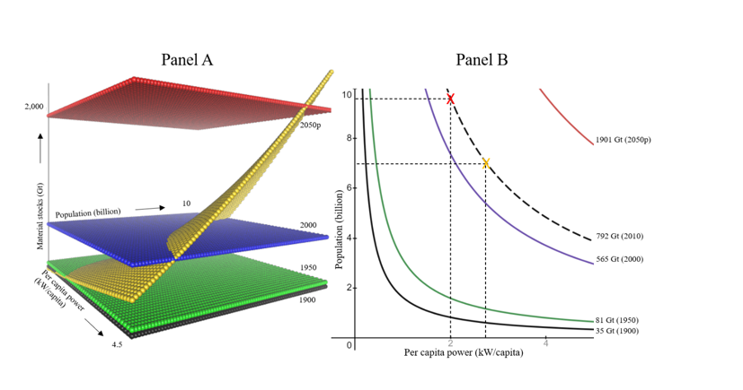

3 Energy Demand
Humanity’s rate of energy consumption (i.e., power) of 16.1 TW in 2010 is projected to increase by 94 – 247% by 2050, with a reference scenario at 140% given by SSP2 and RCP 4.5 (van Ruijven et al., 2019). On track with these expectations, humanity reached 18.9 TW in 2018 - a yearly 2% growth since 2010.
Leiva (2021) Why the energy transtition is not enough
3.1 Energy Statistics
3.2 Energy Transition not Enough
Leiva Abstract
Efforts to accommodate the growth in global energy consumption within a fragile biosphere are primarily focused on managing the transition towards a low-carbon energy mix. We show evidence that a more fundamental problem exists through a scaling relation, akin to Kleiber’s Law, between society’s energy consumption and material stocks. Humanity’s energy consumption scales at 0.78 of its material stocks, which implies predictable environmental pressure regardless of the energy mix. If true, future global energy scenarios imply vast amounts of materials and corresponding environmental degradation, which have not been adequately acknowledged. Thus, limits to energy consumption are needed regardless of the energy mix to stabilize human intervention in the biosphere.
Leiva Memo
We show evidence that the continued increase of energy throughput faces a more fundamental problem. The use of energy requires prime movers such as people, engines, computers, etc. that are built from materials found originally in nature. Moreover, the use of energy inevitably rearranges materials in the environment. This posits a problem that goes beyond the carbon content and speci c material requirements of given technologies, and thus cannot be solved through substitution. Higher power rates need and provoke more materials (metals and others) being rearranged from otherwise healthy ecosystems into social structures such as rms, cities, and governments and into goods such as furniture, electronics, and food. In fact, the 20th century witnessed a 9-fold increase in humanity’s power alongside a 16-fold increase in its material stocks (Krausmann et al., 2017). We contend that the ecosystem degradation (MEA, 2005), biodiversity loss (IPBES, 2019), and dangerous human intervention in the Earth system (Steffen et al., 2015) that followed from such harvesting of the biosphere could have only partially been avoided with a low-carbon energy mix.
We evaluate what we believe is the rst preliminary evidence of a coupling, akin to Kleiber’s Law in biological organisms, between power and the material stocks of social systems.

Figure: Panel A depicts Extended-Kleiber’s Law relation between per capita power, population, and material stocks. The yellow plane shows the 0.78 scaling of material stocks as a function of per capita power and population. In 1900, a population of 1.6 billion people averaging 0.8 kW/capita implied material stocks of 35 Gt (black plane). In 1950, a population of 2.5 billion averaging 1.3 kW/capita implied materials stocks of 81Gt (green plane). In 2000, a population of 6.1 billion people averaging 2.1 kW/capita implied material stocks of 565 Gt (blue plane). In 2050, a projected 9.7 billion people averaging 4.0 kW/capita implies material stocks of 1901 G (red plane). The rapidly increasing distance between the material stock planes at equal 50-year intervals depicts the Great Acceleration. Panel B shows the intersections of the yellow plane at each material stock plane of Panel A to depict iso-material stock curves: the compensation between population and per capita power to maintain the respective material stock levels. Note that these curves only show point estimates of the Extended Kleiber ́s Law and therefore need not show the exact historical values of population and per capita power. The dashed-black line in Panel B shows the 2010 iso-material stock curve (2010 level not shown in Panel A). The line depicts 792 Gt of material stocks with 6.9 billion people averaging 2.8 kW/capita (orange marker, actual data for 2010 is 6.9 billion people averaging 2.3 kW/capita). The dashed-black line implies that maintaining Humanity’s materials stock at 792 Gt while growing to 9.7 billion people requires 2.0 kW/capita (red marker).
If true, this relation implies a strict limit to power growth that cannot be addressed with low-carbon energy sources.
Current projections of energy consumption and population growth imply unsustainable levels of material stocks as they imply considerable additional harvesting of the biosphere.
Current material stocks can be maintained while accommodating population growth through 2050 if a 2.0 kW/capita limit is established. Although this limit has been shown to be enough for a digni ed life, it implies a considerable degrowth in more than half of the world ́s countries.
Theory
Why do social systems ́ power and mass scale this way? One idea is based on fractal geometry (West et al., 1999), where the invariant “length” could be given by the individual person. Brown et al. (2011) use this idea arguing that “The energy and other resources that sustain these systems [animals and economies] are supplied by hierarchically branching networks, such as the blood vessels and lungs of mammals and the oil pipelines, power grids, and transportation networks of nations. Models of these networks suggest that three-quarter-power scaling optimizes distribution of resources”. Another idea is based on size-dependent limitation of resource storage (Maino et al., 2014; Thommen et al., 2019), where the role of macromolecules could be played by energy goods. A third idea is based on the interaction of physiological features with environmental conditions (Koziowski & Weiner, 1997), where growth and reproduction could be given by an economy ́s aggregate investment and consumption. In any case, noting that the theoretical basis of Kleiber’s Law remains controversial after 80 years of research (Escala, 2019; Hulbert, 2014), nding a theoretical explanation for an extended Kleiber ́s Law remains as future research that may become foundational science towards Humankind ́s sustainability. In the meantime, further data on mass and energy of nations is important to broaden the empirical basis of this relationship.
If population reductions are not an option, the most reasonable response would be a worldwide 2.0 kW/capita limit.
A speci c limit at 2.0 kW/capita has been proposed by the 2000-watt society since 1998 based on the per capita power of western Europe during the 60s and the digni ed life it enabled, and according to our results, it is coincidentally the value required to maintain material stocks in check below 800 Gt globally by 2050 given expected population levels.